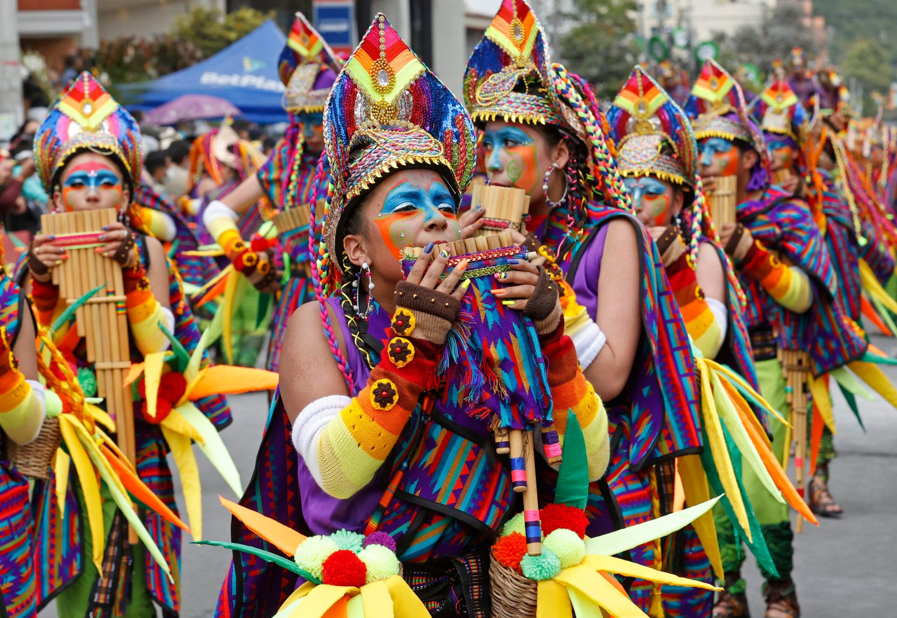

Festividad
Conoce más del evento →
Carnaval de Negros y Blancos
Una celebración llena de color, creatividad y tradición, con carrozas, comparsas, música y expresiones culturales que representan la identidad de Pasto.
Pasto, Nariño
Fecha: : 28 de diciembre -6 de enero